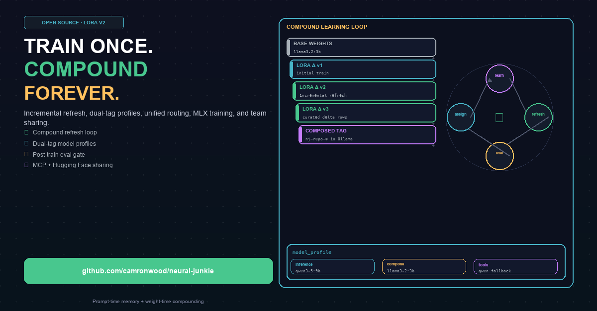

See the full article on GitHub: LORA-V2-LINKEDIN.md and technical docs: LORA_V2.md.
Related: LoRA v1 · Two-tier LoRA · MCP + LoRA · Personal learning v2
Long-form · Neural Junkie
LoRA v1 let you train once from chat history. v2 closes the loop: incremental refresh, transparent dual-tag profiles, per-turn routing, MLX on Mac, eval before assign, and team sharing via MCP + Hugging Face.

See the full article on GitHub: LORA-V2-LINKEDIN.md and technical docs: LORA_V2.md.
Related: LoRA v1 · Two-tier LoRA · MCP + LoRA · Personal learning v2